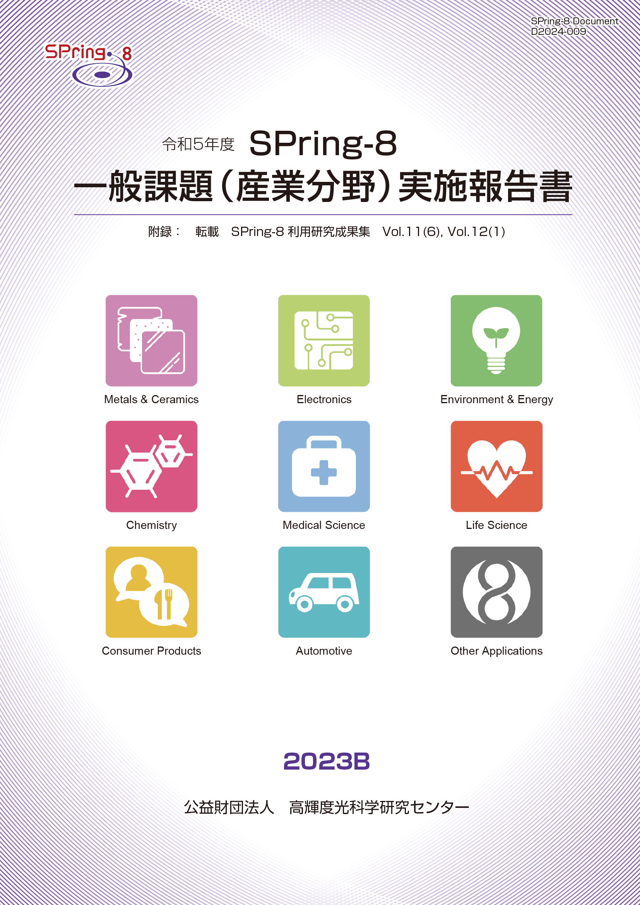
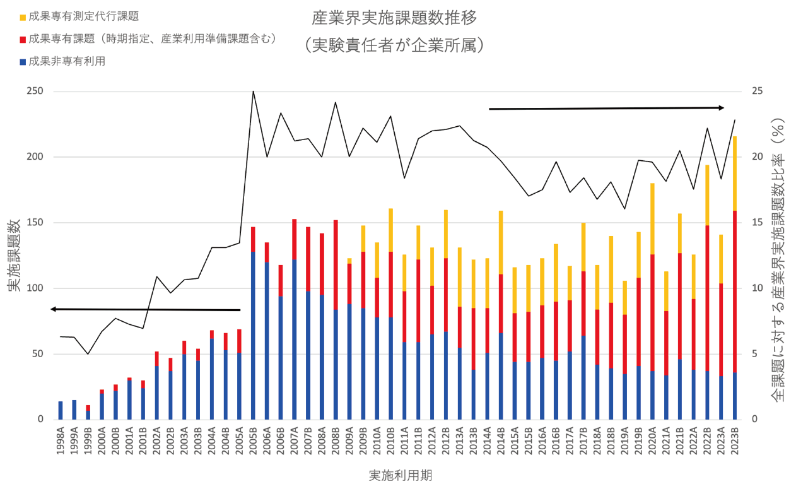

目次

1. はじめに2. 課題募集制度の概要
3. 成果公開の考え方
4. 実施状況
5. 産業利用分野の利用動向
6. 報告書
* 送付を希望される方は、連絡先（氏名、所属、〒住所、E-mail）をご記入の上、 事務局 support@spring8.or.jp までE-mailでご連絡ください。
はじめに
本報告書は2023B期に産業利用分野で審査・採択された一般課題（以降、一般課題（産業利用分野）と呼称）として実施された課題の実施状況の報告を目的として、SPring-8利用研究成果集としての審査を行わなかった課題の報告書を収録したものである。
本報告書が対象としている課題募集制度の概要
-
一般課題（産業利用分野）
- 新規利用拡大の観点から課題審査において利用経験を考慮する。
- 民間企業利用拡大の観点から課題審査において所属機関を考慮する。
- 課題実施後約2～4か月以内に所定の書式の産業利用課題実施報告書を提出する。なお、この報告書はSPring-8利用研究成果集として審査を受けることも可能である。
- 全採択課題に担当コーディネーターを配置する。
- 科学技術的妥当性に関する審査は
(1)産業基盤技術としての重要性および発展性
(2)社会的意義および社会経済への寄与度
に重点をおいて実施する。
この「一般課題（産業利用分野）」の課題とは、成果非専有の一般課題のうち、課題申請の際に産業利用分野での課題審査を希望した課題（課題審査は課題審査委員会 産業利用分科会が行う）を示す。この課題の申請については、実験責任者もしくは共同実験者に民間企業、または産業界に準ずる機関に所属する者が含まれていることを申請要件としている。産業界に準ずる機関とは、公設試験場及び民間企業からの委託試験・研究を主な事業とする財団／社会法人と定義している。その他に、本制度は以下の５項目の特徴を持つ。
なお、2022A期まで産業利用分科会を主審査分科会としていた旧産業利用ビームラインのBL14B2（現XAFS II）、BL19B2（現X線回折・散乱 II）、BL46XU（現HAXPES II）のみで行っていた年６回募集注１は、2022B期からBL01B1、BL02B1、BL02B2、BL09XU、BL13XU、BL47XU（一部注２）を加えた計９ビームラインにおいて、産業利用分科会審査の課題以外にも拡大して実施されることになった。さらに、上記の３本の旧産業利用ビームラインの課題申請は、産業利用分科会審査の課題以外も2022B期から受け入れることになった。これにより「4. 実施状況」で後述するように、これまでこれらの旧産業利用ビームラインを利用することを主目的として産業利用分科会の審査に申請していた学官のユーザーの課題申請が他の学術系分科会への申請にシフトした。この事情を背景として、2023A期よりこの産業利用分科会の審査基準を、より産業界の価値基準に特化する方向に強化した。具体的には、科学技術的妥当性に関する審査の審査基準(1)「産業基盤技術としての重要性および発展性」の観点を、特にその申請課題に関連する「企業」にとって課題で得られる成果がどのような価値があるかに重点を置くこととした。
*注1）一般課題（産業利用分野）だけでなく大学院生提案型課題及び成果専有課題、成果公開優先利用課題も受付。
*注2）BL47XUのA2期、A3期、B2期、B3期の課題募集は、募集マシンタイムは6シフトのみで、募集分野は産業利用分野のみ。
本報告書が対象としている課題の成果公開の考え方
成果の公開については、他の成果非専有の一般課題と同様に学術誌上への論文掲載（博士論文も含む）もしくはSPring-8利用研究成果集への採録による成果公開が求められる。この産業利用課題実施報告書の提出は「成果の公開」とは認定されないが、これらの報告書は著者からの申し出により課題ごとにSPring-8利用研究成果集としての審査を受けることが可能である。SPring-8利用研究成果集としての審査を受けない実施報告書は、JASRIコーディネーター等による校閲を経て課題実施期が終了して約6か月後に出版･公開されるが、それ以外はSPring-8利用研究成果集としての掲載をもって公開とする。
実施状況
以下に令和5年度2023B期の一般課題（産業利用分野）の応募・採択結果を表1にまとめる。
- 応募・採択結果 一般課題（産業利用分野）
表 1．応募時期及び研究機関別一般課題応募・採択結果
＊ 応募数と採択数には、一般課題と同時に審査される大学院生提案型課題（応募数：B1期 2課題、B2期 0課題、B3期 0課題 ／ 採択数：B1期 1課題、B2期 0課題、B3期 0課題）を除く。募集時期 機関分類 応募数＊採択数採択率（%）第1期募集学官12541.7産業界111090.9合計231565.2第2期募集学官5360.0産業界100.0合計6350.0第3期募集学官7457.1産業界55100.0合計12975.0総計412765.9
昨年度同時期の2022B期の課題実施状況を比較すると、まず応募課題数は41課題で、2022B期の51課題から若干減少している。機関分類の内訳を見ると学官が24課題、産業界（企業）が17課題で、2022B期の学官31課題、産業界27課題と比較すると、若干産業界のユーザーの申請の減少が大きい。この状況は、後述の図１のSPring-8の産業界ユーザーの利用動向で示されているように、産業界ユーザーのSPring-8利用が成果専有利用にシフトしているという状況を反映していると考えられる。採択率は昨年度2022B期の47.1%に対し、今期の2023B期は65.9％と増加している。
- SPring-8利用研究成果集としての審査
前記のとおり2011B期より成果公開の扱いが変更になったため、実験責任者の希望に応じて重点産業利用報告書をSPring-8利用研究成果集（現在はSPring-8/SACLA利用研究成果集）として査読審査を受けて公開文書として扱うことも可能とした。放射光施設横断産業利用課題及び産業利用分野の一般課題も同様で、SPring-8/SACLA利用研究成果集として審査を受ける公開文書とすることができる。SPring-8/SACLA利用研究成果集への公開は査読審査が終了し成果審査委員会での承認後となるため、SPring-8/SACLA利用研究成果集に投稿予定の課題は採録していない。今回は、2023B期で採択・実施された 28課題（産業利用分科会以外で審査採択された4課題を含む）の報告書を掲載する。また対象となる課題で、2023A期の報告書発行後にSPring-8/SACLA利用研究成果集に掲載された6件の報文を付録として掲載する。
産業利用分野の利用動向
-
図1はSPring-8の共同利用が開始された1998年からの利用期毎の産業界ユーザーの実施課題数の推移である。成果非専有利用（青）と成果専有利用で分類して示しており、成果専有利用については成果専有課題（時期指定、産業利用準備課題も含む）（赤）と成果専有測定代行課題（橙）に分類している。黒線で示しているのは全実施課題数に対する産業界ユーザーの実施課題数比率である。この産業界ユーザーの実施課題数比率は2005B期に20%を超えた後、だいたい同程度の水準を維持している。しかしながら、この間に利用形態は大きく変わっており、2005B期には87%が成果非専有利用であったが、その後成果専有利用へのシフトが進み、今期の2023B期には83％が成果専有利用である。この成果専有利用へのシフトを牽引したのが2009年度から開始した成果専有測定代行課題で、2013Aから2018B期にかけて成果専有利用のうち約半分を占めている。近年ではさらにこの成果専有測定代行課題以外の成果専有利用が増加傾向にあり、2023B期ではこの成果専有測定代行課題以外の利用が123件である（成果専有利用の内の約68%）。

図1. 共同利用で産業界ユーザーが実施した課題の実施数推移
報告書
附録 “SPring-8/SACLA利用研究成果集 Section B”より転載
Volume 11 No.6 (https://www.jstage.jst.go.jp/browse/springresrep/11/6/_contents/-char/ja） |
|||
2017B1605 |
ゴム中不均一構造のX線位相差CT観察 DOI 10.18957/rr.11.6.407 |
丸山 隆之 | (株)ブリヂストン |
Volume 12 No.1（https://www.jstage.jst.go.jp/browse/springresrep/12/1/_contents/-char/ja） |
|||
2016A1515 |
酸化物分散強化フェライト鋼の添加元素によって異なる酸化物粒子析出プロセスの解明 DOI 10.18957/rr.12.1.24 |
大野 直子 | 北海道大学 |
2018A1572 |
微分位相X線マイクロCTを用いた毛髪内空隙の可視化検討 DOI 10.18957/rr.12.1.33 |
鈴田 和之 | (株)ミルボン |
2019A2011 |
SiGe/Ge薄膜試料におけるX線回折吸収分光法によるデバイワーラー因子の導出の試行１ DOI 10.18957/rr.12.1.37 |
藤原 孝将 | 公財)高輝度光科学研究センター |
2019B1734 |
SiGe/Ge薄膜試料におけるX線回折吸収分光法によるデバイワーラー因子の導出の試行2 DOI 10.18957/rr.12.1.41 |
藤原 孝将 | (公財)高輝度光科学研究センター |
2022B0511 |
真空紫外光照射により表面改質したCOPフィルムと無電解めっき膜界面のHAXPES解析 DOI 10.18957/rr.12.1.55 |
有本 太郎 | ウシオ電機(株) |
Volume 12 No.2（該当掲載論文なし） |
|||
附録Ⅱ 「成果公開優先利用」(産業分野) 課題 (2020A)，「先進技術活用による産業応用課題」(2019A ～ 2020A)の登録済み成果
発 行 日： 令和 6 年 8 月 26 日
編集・発行： 公益財団法人 高輝度光科学研究センター
「令和5年度 SPring-8 一般課題(産業分野)実施報告書 (2023B)」送付を希望される方は、 連絡先（氏名,所属,〒住所,E-mail）をご記入の上、事務局 support@spring8.or.jp までE-mailでご連絡ください。